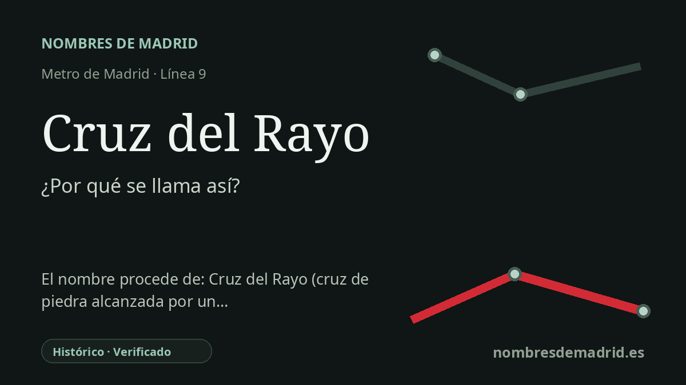

Publicado el · Investigación de Nombres de Madrid · Cómo verificamos cada origen · 8 fuentes consultadas
Respuesta rápida
Cruz del Rayo toma su nombre de la colonia histórica homónima de Chamartín, inspirada en la ciudad-jardín. El topónimo anterior se explica tradicionalmente por una cruz del lugar que habría sido dañada o destruida por un rayo.
La historia del nombre
La estación de Cruz del Rayo recibe su nombre del topónimo histórico del entorno y, sobre todo, de la Colonia Cruz del Rayo de Chamartín. La parada de Metro se abrió en la línea 9 en los años ochenta, pero el nombre que lleva procede de un paisaje urbano anterior, situado entre El Viso y Prosperidad.
La explicación más conocida es una leyenda local. El relato municipal de Madrid dice que una cruz existente en la zona, colocada sobre un pedestal de piedra, fue destruida por un rayo y dio nombre al lugar. Otras versiones populares hablan de una cruz de hierro y dicen que quedó deformada o dañada, no necesariamente destruida. Como estas versiones pertenecen a la tradición y no a una prueba archivística concluyente, la historia de la cruz debe presentarse como leyenda de origen del topónimo, no como un hecho plenamente verificado.
Lo que sí está mucho mejor documentado es la historia urbana posterior del nombre. La guía arquitectónica del COAM registra la Colonia Cruz del Rayo como un proyecto de Eduardo Ferrés y Puig, con proyecto y obras en torno a 1927-1929, promovido por la Real Institución Cooperativa de Funcionarios del Estado, Provincia y Municipio. La colonia se construyó con viviendas de baja altura, jardines, trazado viario curvo y radial, y servicios colectivos, siguiendo el ideal de ciudad-jardín asociado a Ebenezer Howard.
Así, el nombre pasó a ser mucho más que una etiqueta pintoresca. La colonia se convirtió en uno de los ensayos residenciales más singulares del Madrid de entreguerras: un pequeño enclave de casas, jardines, detalles art déco y modernistas, y equipamientos pensados para la vida de barrio. El espacio central, antes plaza de Aunós y hoy plaza de José Castillejo, ayuda todavía a entender por qué la zona se percibe de forma distinta frente a las calles más densas del entorno de Príncipe de Vergara.
Para la etimología de la estación, la formulación más segura es: nombre tomado del topónimo y de la colonia histórica Cruz del Rayo, cuyo origen tradicional se atribuye a una cruz alcanzada por un rayo. Las fuentes oficiales y profesionales respaldan con fuerza la colonia, las fechas, el promotor, el arquitecto y la historia de protección. El episodio físico de la cruz sigue siendo una leyenda local con detalles variables.